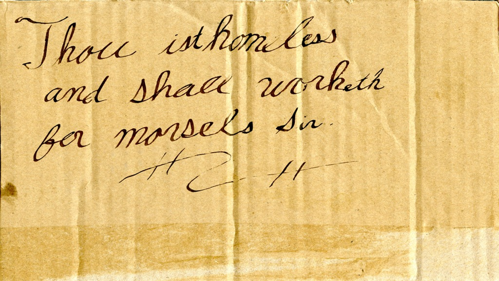

Medieval Illiterate Homeless People Were Fooky

{kind=link}

Thous ist homeless and shall work for morsels sir.

Wilst work for Morsels. George Will Slept Here and he will enjoy morthels of meats because he will be the King of the United S States
Medieval illiterate homeless people were fooked up and predicted future presidents and other people’s homelessness. You’re homeless mister and will work for food.
Also Steve Jobs went into the future and created apples, but before that he predicted Geoge Washington becoming the king of the United states because he cut down an apple tree and shot apples off peoples heads because he was also William Tell.
Steve Jobs was an illiterate homeless medieval phone maker. .
Related posts

EMToast: Top 5 Werewolf Sightings
EMToast has done extensive market research and delved deep into EMToast personal memory banks to bring you the top 5…

Werewolf Sighting: Ass Dragging Werewolf Ruins Carpet
January 15, 2009 A Greenbay Wisconsin woman returned home friday afternoon to find a creature defiling her living room carpet.

Anybody Votes! Office Horrors: Creepy Vs Werewolf
There are hundreds of horrors that greet us everyday in the office. From sneezing babies, to prehistoric insects, you just…

Werewolf Sighting: Boy Poisons Creature with Antifreeze
MEDFORD, WISCONSIN – An area boy told local authorities he was able to fend off a werewolf attack Friday night…